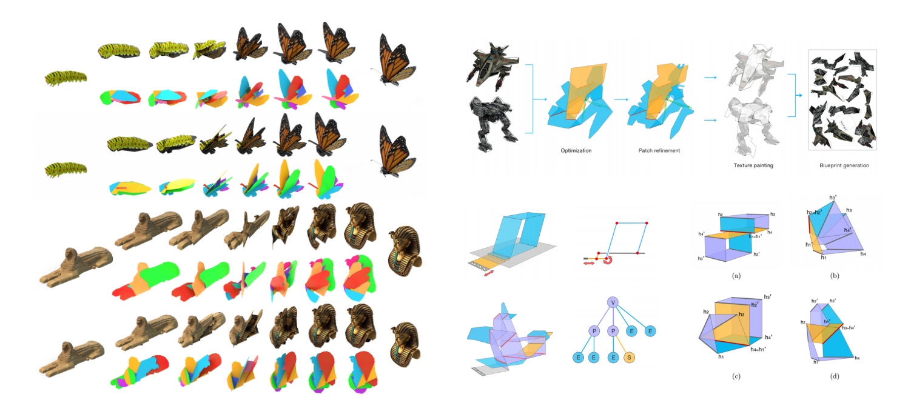
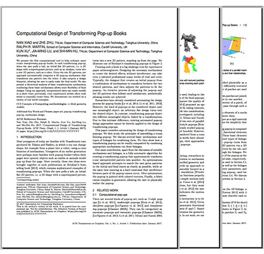

Computational Design of Transforming Pop-up Books
Abstract
We present the first computational tool to help ordinary users create transforming pop-up books. In each transforming pop-up, when the user pulls a tab, an initial flat 2D pattern, i.e. a 2D shape with a superimposed picture, such as an airplane, turns into a new 2D pattern, such as a robot. Given the two 2D patterns, our approach automatically computes a 3D pop-up mechanism that transforms one pattern into the other; it also outputs a design blueprint, allowing the user to easily make the final model. We also present a theoretical analysis of basic transformation mechanisms; combining these basic mechanisms allows more flexibility of final designs. Using our approach, inexperienced users can create models in a short time; previously, even experienced artists often took weeks to manually create them. We demonstrate our method on a variety of real world examples.
Publication

Computational Design of Transforming Pop-up Books
ACM Transactions on Graphics, Vol. 37, No.1, 2018, Article No. 8. Presented at SIGGRAPH 2018
Nan Xiao, Zhe Zhu, Ralph Martin, Kun Xu, Jia-Ming Lu and Shi-Min Hu
> Paper PDF <
> Supplemental PDF <
> PPT(67MB) <
Fast Forward
Citation
@article{Xiao:2018:CDT:3151031.3156934,
author = {Xiao, Nan and Zhu, Zhe and Martin, Ralph R. and Xu, Kun and Lu, Jia-Ming and Hu, Shi-Min},
title = {Computational Design of Transforming Pop-up Books},
journal = {ACM Trans. Graph.},
issue_date = {January 2018},
volume = {37},
number = {1},
month = jan,
year = {2018},
issn = {0730-0301},
pages = {8:1--8:14},
articleno = {8},
numpages = {14},
url = {http://doi.acm.org/10.1145/3156934},
doi = {10.1145/3156934},
keywords = {Paper art, mechanism design, pop-up, transforming pop-up},
}